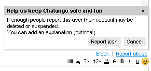

Help: how to report abuse
Abuse in private messages
Blocking users with user names
When you receive a private message, you can block the sender by clicking the Block link above the text input box:

Please note: the Block button only appears when the other user has started the chat session. If you do not see the block link, make sure the user is not in your friend's list: the block link does not show for friends.
If you block someone who has a Chatango user name it also blocks their IP, so they will not be able to private message you from any user name. You can unblock them later by clicking on the Account link in the top right corner of your private messaging window, choose Block list, and finding this person in the list of people you have blocked.
Blocking anons
There are two ways to block "anon"s (people who message you through your Chatango mini box without signing up for Chatango):
- Block an individual anon by clicking the Block this person button when an anon contacts you

- Block all anon's: Account > Settings > and uncheck Allow anons to message me

If you block all anons, all people will be asked to log in before they can private message you.
Reporting users
You can also report spam or inappropriate private messages to Chatango. Click on the Report Abuse link.

When enough people click on the Report Abuse button for a particular person, that person automatically gets restricted from private messaging others. Providing an abuse report when a user messages you will give Chatango the necessary technical information in case we need to restrict that user. You can also provide a comment when you submit an abuse report.
Limit contact by strangers
This option controls whether your profile is shown in the Meet People tab:
Account > Settings > and uncheck Show my profile in Meet People

When it is not checked, your profile does not show up in the search results and it is not visible under Meet People.
Abuse in a group chat
Flagging users
When there are no moderators in the chat, users can flag  unwanted messages. unwanted messages.If a person's messages get flagged by enough users, the sender of that message will become restricted from posting in the group for a certain period of time. |
Banning users and deleting messages
| Chatango provides multiple moderation mechanisms that allow group chat owners (i.e. users that created the group chats) and moderators that they make to ban unwanted users and delete their messages. Please click here for more information. |
Moderators
| Chat Moderators are not made by Chatango, they are made by the owner (creator) of each individual chat group (typically, the owner of the web site in which the group chat is embedded). If you wish to report abuse in a group chat please report it to the owner or a moderator in a group first. |
Banning words
| Group owners can ban certain words from a chat. To set the banned words you must be logged in as the group owner. Click here for more information. |
Turn an embedded chat off

|
If you visit a web page with an embedded Chatango chat, but do not wish to see the chat on it, you can turn it off by clicking on the If you do not see |
Inappropriate profile content
In the meet people section of the private chat you can report a profile by rolling over the mini profile and clicking the report flag (
 ):
):
If you find a profile page that has offensive content, you can report the picture on the page by clicking the report picture link below the picture.
If other parts of the profile are inappropriate you can report the profile by opening a new chat with the person (if you do not type anything they will not know that you have done this). In their mini profile at the bottom left of the private chat page you will see the report button (
 ). You can use this to report their profile.
). You can use this to report their profile.Other issues
Please note that Chatango does not monitor or censor group chats or instant messages. We encourage users to moderate content that they consider inappropriate as described here and here.
Chatango may remove content or restrict user access for violation of our Terms of Use, e.g. for linking to or posting pornographic images, phishing, sending spam messages or posting private information such as credit card numbers or social security numbers.
Individual messages sent to Chatango chats are owned by the users who wrote them. We strongly believe in the principles of free speech. Although Chatango may investigate other incidents, the language of Section 230(c) of the Communications Decency Act fundamentally states that Internet services like Chatango.com are republishers and not the publisher of content. Therefore, Chatango is not held liable for any allegedly defamatory, offensive, libelous or harassing content published on the site. Please note that Chatango is a provider of chat tools, not a mediator of posted content.
If believe that you've found content in a group chat that violates our Terms of Use, such as spam or pornography, you can report it here.